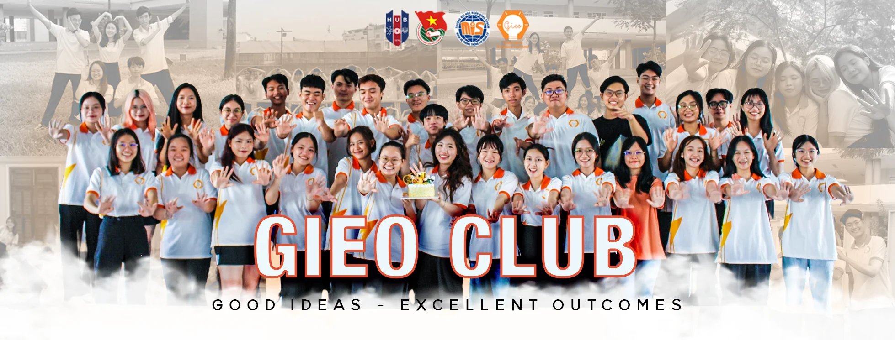

01 VÒNG TUYỂN CHỌN
06/11 – 14/11/2026
REVEAL
YOUR COLOR
Khám phá sắc màu
Nộp CV và trả lời câu hỏi ứng tuyển. Hãy để GIEO nhìn thấy câu chuyện, động lực và thế mạnh của bạn.
✦CLB HỌC THUẬT GIEO · TUYỂN THÀNH VIÊN THẾ HỆ THỨ 5
SẮC RIÊNG TỎA SÁNG —
CÙNG GIEO RỰC RỠ.
Một tia sáng. Bốn sắc màu. Vô vàn khả năng. Khám phá ban phù hợp, kể câu chuyện của chính bạn qua CV PRISM và tự tin bước vào hành trình Gen 5.

REAL PEOPLE. REAL GIEO.01 / OUR STORY
Mỗi người mang một góc nhìn: người đặt câu hỏi, người mở cánh cửa kết nối, người giữ nhịp tập thể, người biến ý tưởng thành trải nghiệm. GIEO là lăng kính để những điều ấy được nhìn thấy và lớn lên.
Không phải sân chơi của riêng những bạn đã “giỏi sẵn”. Đây là nơi bạn có thể bắt đầu, thử, sai, học và làm nên những điều có ý nghĩa cùng nhau.
02 / RECRUITMENT JOURNEY
Hai vòng tuyển chọn để tìm hiểu nhau. Một ngày hội tụ để chính thức bắt đầu hành trình mới.
06/11 – 14/11/2026
Khám phá sắc màu
Nộp CV và trả lời câu hỏi ứng tuyển. Hãy để GIEO nhìn thấy câu chuyện, động lực và thế mạnh của bạn.
✦15/11 – 20/11/2026
Tỏa sáng bản thân
Gặp gỡ và phỏng vấn theo ban đăng ký. Không chỉ là câu hỏi — đây là cuộc trò chuyện để hiểu nhau hơn.
◈21/11/2026
Hội tụ sắc màu
Công bố trúng tuyển, chào đón những thành viên mới và teambuilding gắn kết bốn ban.
✳03 / MEET THE SPECTRUM
Không có sắc màu nào “xịn” hơn màu nào. Mỗi ban có một sứ mệnh, một cách tạo ra dấu ấn và những cơ hội để phát triển.
04 / FIND YOUR COLOR
12 tình huống nhỏ để hiểu điều gì khiến bạn hào hứng khi làm việc nhóm. Không kiểm tra kiến thức, không có đáp án đúng/sai.
Chọn một phương án trước khi tiếp tục nhé.
05 / YOUR STORY, YOUR CV
Tạo CV mang dấu ấn riêng, xem trước trực tiếp và xuất PDF ngay trên máy. Website không nhận hay lưu hồ sơ; bạn tự gửi CV qua Google Form của CLB.
Ứng viên · GIEO CLUB
Giới thiệu ngắn về bản thân của bạn sẽ xuất hiện ở đây.
Điểm mạnh và kỹ năng...
Những trải nghiệm đã giúp bạn trưởng thành...
Mục tiêu và những giá trị bạn muốn đóng góp...
06 / GOOD TO KNOW
Có. GIEO quan tâm đến thái độ, tinh thần học hỏi, trách nhiệm và mức độ phù hợp. Hãy kể những trải nghiệm thực tế của bạn, dù nhỏ.
Không. Quiz chỉ là công cụ tự khám phá, không phải bài đánh giá năng lực đã được kiểm định và không quyết định kết quả tuyển chọn.
Có. Bạn có thể chọn một hoặc nhiều ban, kể cả các ban khác với kết quả trắc nghiệm. Khi chọn nhiều ban, bạn sẽ trả lời câu hỏi chuyên môn của tất cả các ban đó.
Điền CV trên trang, chọn xuất PDF và lưu về máy. Sau đó mở Google Form chính thức của GIEO để tải lên tệp PDF. Website không tiếp nhận hồ sơ trực tiếp.
Không. Đây là ngày công bố kết quả, chào đón những thành viên đã trúng tuyển và tổ chức hoạt động gắn kết.